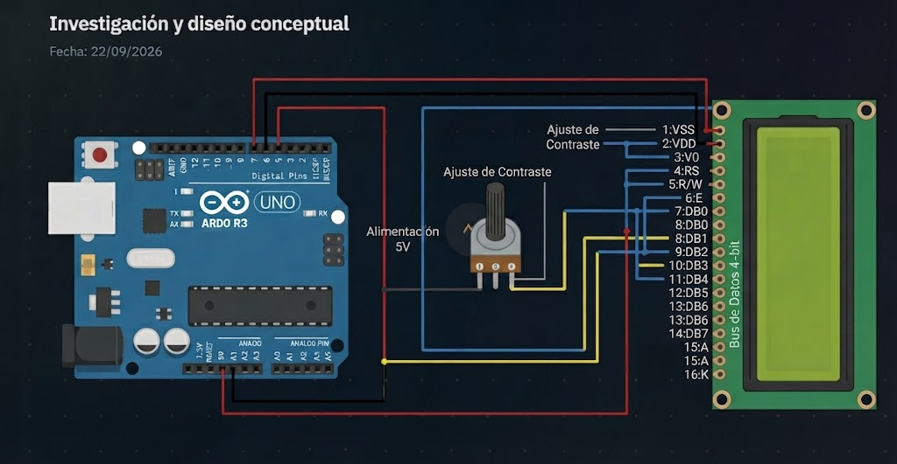
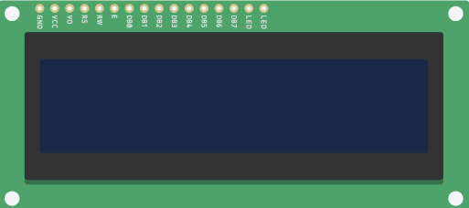
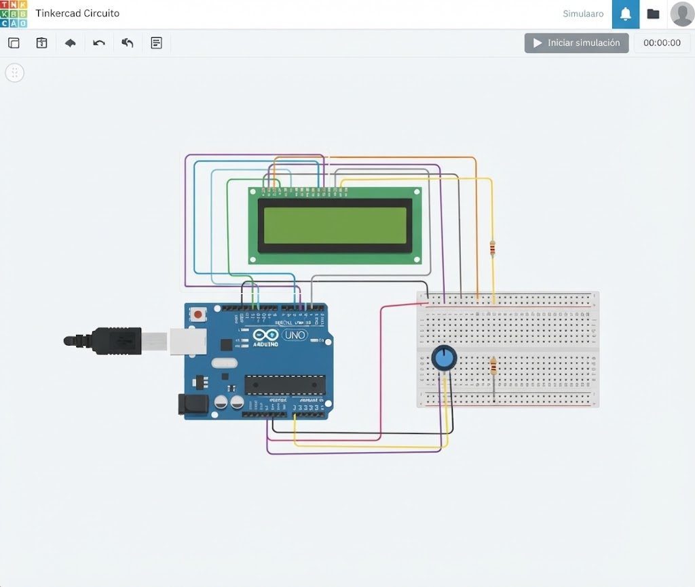
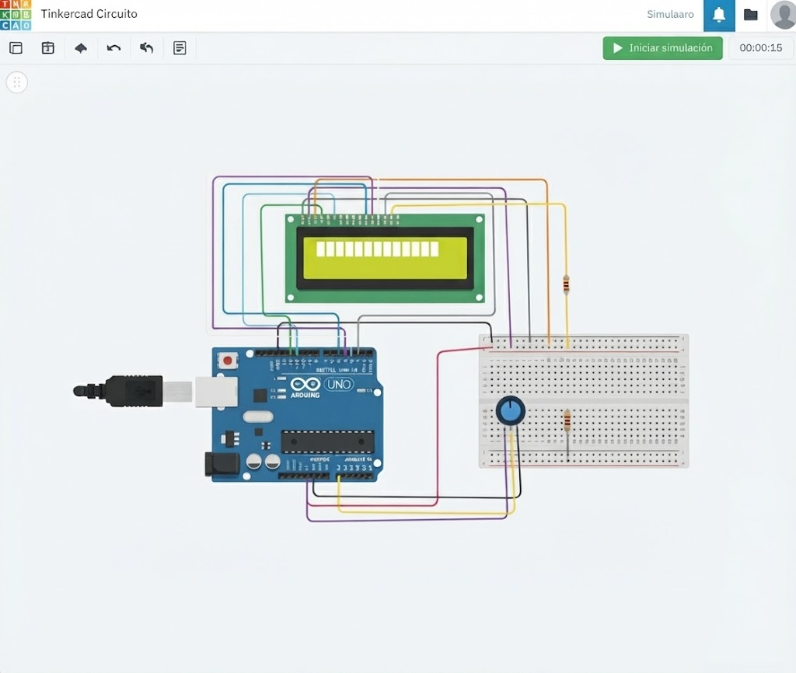
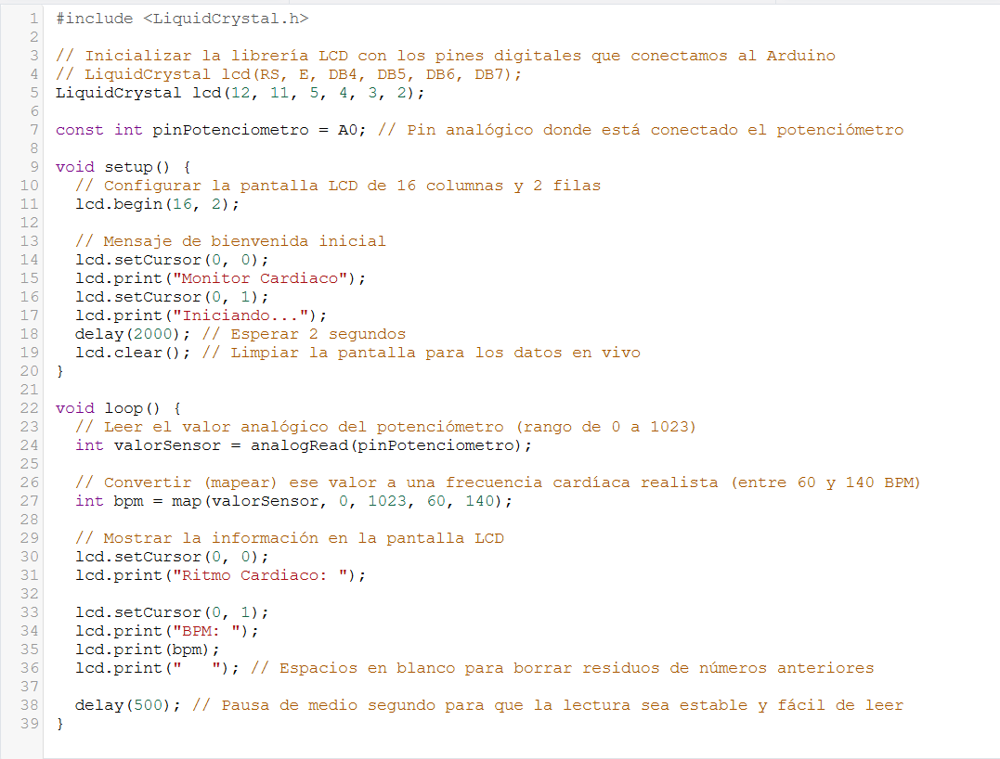
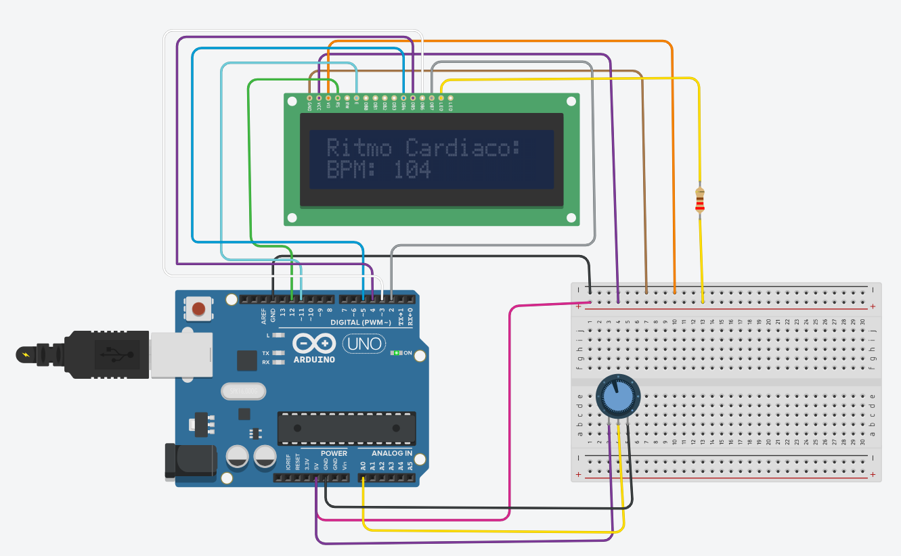
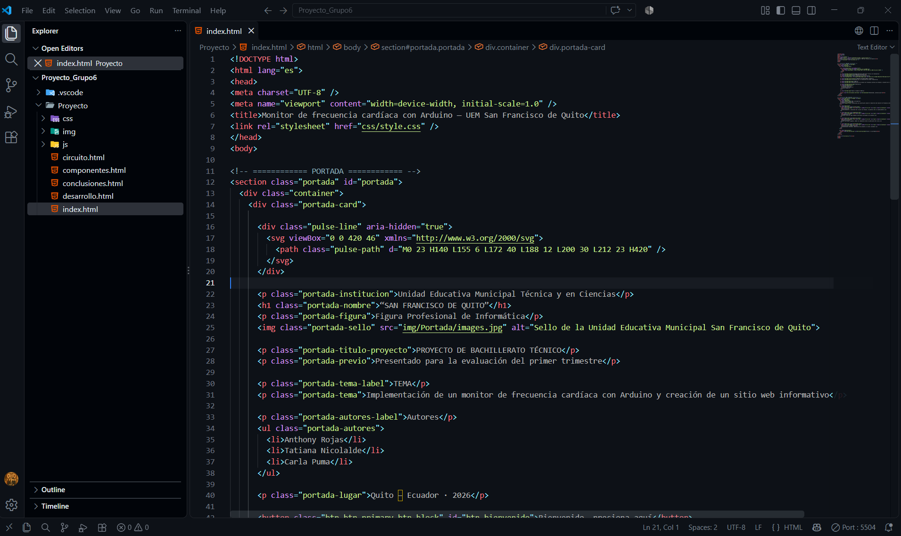
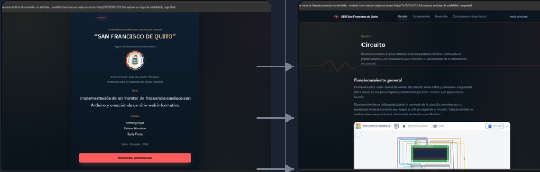
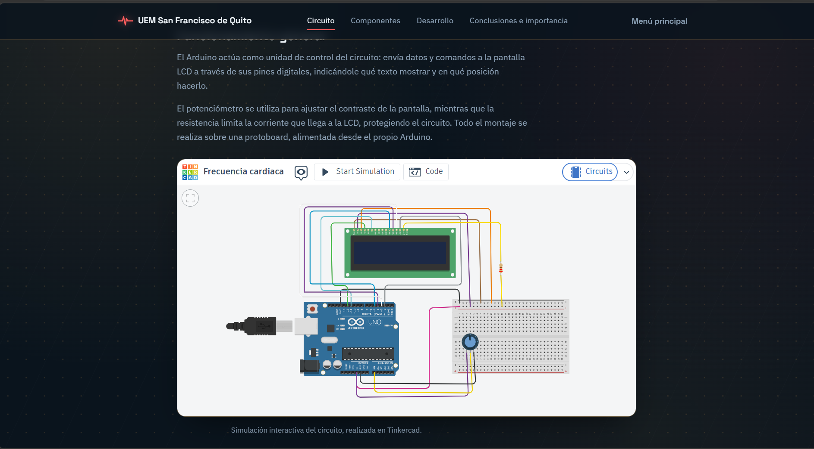

Investigación y diseño conceptual
Fecha: 22/09/2026Se investigó el funcionamiento de la tarjeta Arduino UNO, de una pantalla LCD 16x2 y de un potenciómetro, así como los pines necesarios para su comunicación.

Se comprendió el funcionamiento básico de cada componente antes de iniciar el diseño del circuito.
Preparación de los componentes
Fecha: 23/09/2026Se reunieron y verificaron todos los elementos necesarios: Arduino UNO, pantalla LCD 16x2, protoboard, potenciómetro, resistencia, cables Dupont y cable USB. Se comprobó el estado de cada pieza antes de iniciar el armado.

Todos los componentes quedaron identificados y listos para el armado del circuito.
Diseño y simulación del circuito
Fecha: 24/09/2026Se diseñó el circuito en la plataforma Tinkercad, ubicando la pantalla LCD, el potenciómetro y la resistencia sobre la protoboard, y conectándolos a los pines digitales del Arduino.

Se obtuvo un circuito simulado y validado virtualmente, listo como referencia para el armado físico.
Validación de la simulación
Fecha: 25/09/2026Se revisó la simulación en Tinkercad verificando que las conexiones (RS, E, D4 a D7, VO, alimentación y tierra) coincidieran con el diseño planteado, antes de pasar al armado físico.

Las conexiones quedaron confirmadas como correctas antes de iniciar el montaje real.
Construcción del circuito
Fecha: 26/09/2026Se realizaron las conexiones entre la pantalla LCD, el potenciómetro, la resistencia y el Arduino sobre la protoboard, siguiendo el orden descrito en la sección de Circuito, cuidando la polaridad y la firmeza de cada conexión.

El circuito quedó armado y listo para recibir la programación del Arduino.
Programación de Arduino
Fecha: 27/09/2026Se escribió y cargó el programa en el entorno de Arduino IDE, encargado de enviar los comandos y caracteres necesarios para mostrar información en la pantalla LCD a través de sus pines digitales.

El Arduino quedó programado para mostrar correctamente la información en la pantalla LCD.
Prueba del circuito
Fecha: 28/09/2026Se realizaron pruebas encendiendo el circuito, ajustando el potenciómetro hasta lograr un contraste adecuado y verificando que la pantalla LCD mostrara correctamente el texto programado.

El circuito respondió correctamente, mostrando la información en pantalla de forma clara y estable.
Diseño del sitio web
Fecha: 29/09/2026Se diseñó la estructura del sitio web (portada, menú, circuito, componentes, desarrollo y conclusiones) utilizando HTML5 y CSS3, definiendo un estilo moderno y educativo.

Se obtuvo la estructura de páginas y el estilo visual del sitio ya definidos.
Programación e integración del contenido web
Fecha: 30/09/2026Se programó la interactividad del sitio con JavaScript y se integró el contenido de cada sección: la simulación del circuito, la ficha de los componentes y los pasos del desarrollo.

El sitio web quedó funcional, con toda la información del proyecto integrada y navegable.
Presentación del proyecto en el sitio web
Fecha: 02/10/2026La información recopilada durante el desarrollo se organizó en un sitio web creado con HTML5, CSS3 y JavaScript. El contenido se distribuyó en secciones claras —portada, circuito, componentes, desarrollo y conclusiones— para facilitar su lectura y comprensión.

Se obtuvo un sitio web ordenado, navegable y adecuado para presentar el proyecto de Bachillerato Técnico.